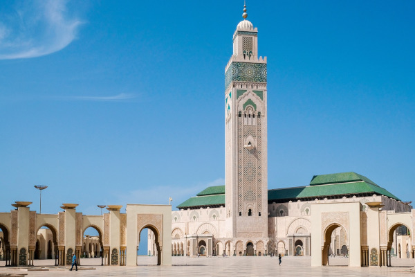
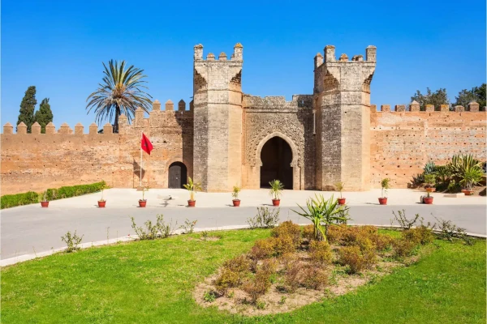
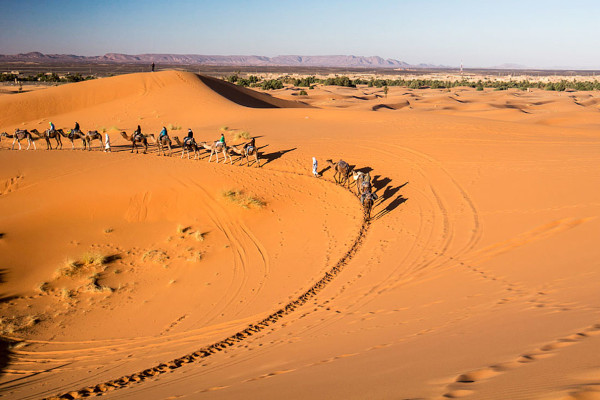

Marrocos: O Cruzeiro da Cultura e da Aventura
Marrocos, um país localizado no noroeste da África, é um destino que combina a riqueza da cultura árabe e berbere com a beleza natural das montanhas, desertos e praias. Com uma história que remonta aos tempos antigos, Marrocos é um lugar onde a arquitetura deslumbrante, a culinária deliciosa e a hospitalidade calorosa se entrelaçam para criar uma experiência de viagem única. Desde as ruas labirínticas de Marrakech até as dunas do deserto do Saara, cada canto deste país guarda segredos e maravilhas que continuam a encantar viajantes de todo o mundo.
Viajar ao Marrocos é uma jornada através de contrastes fascinantes. Você pode passear pelos mercados animados de Djemaa el-Fna, explorar os palácios e jardins de Rabat, ou desfrutar de um mergulho nas águas cristalinas de Essaouira. A diversidade cultural e natural de Marrocos oferece uma experiência enriquecedora, onde cada dia pode trazer novas descobertas e aventuras.
Neste guia de viagens, vamos explorar as dicas essenciais para tornar sua aventura em Marrocos inesquecível, desde a preparação pré-viagem até as experiências que você não pode deixar de vivenciar. Prepare-se para uma jornada que irá expandir seus horizontes e deixar uma marca indelével em sua memória.
Documentos necessários
Para viagens de turismo, viajantes brasileiros não necessitam de visto para entrar e permanecer no Marrocos pelo período máximo de até 90 dias. Lembre-se de que, apesar do visto não ser exigido, você deve: Ter um passaporte legível por máquina válido por pelo menos seis meses a partir da data de entrada e uma página de visto em branco. Ter comprovação do voo de ida e volta.
Moeda
O dinheiro do Marrocos é o Dirham. A cotação normalmente é 1 dirhams = 0,57 real brasileiro. Muitos estabelecimentos não aceitam cartão, então se prepare para levar dinheiro e trocar numa casa de câmbio.
Idioma
As línguas oficiais do Marrocos são o árabe e o berbere, a língua dos povos originais. Muitos falam francês na região de Marrakech, fora dela é mais difícil. Recomendo falar inglês ou espanhol.
Melhor época para visitar
A melhor época para viajar ao Marrocos é o Outono em Setembro a Novembro ou início da Primavera de Março a segunda semana de Abril. O tempo vai estar quente, mas não encontrará aquelas temperaturas absurdas do verão. Da mesma forma que as noites do deserto não serão tão frias (mesmo assim, leve roupa para friozinho tipo 5 graus de manhã cedo). Estas são consideradas as épocas de alta temporada.
Conselhos de saúde
Não existem vacinas para viajar a Marrocos obrigatórias. No entanto, são recomendáveis, além das vacinas sistemáticas (BCG, Hepatite B), as vacinas contra a febre tifóide, Hepatite A, poliomielite, cólera e tétano. É também recomendável viajar com um repelente de mosquitos e anti-insetos. Para mais informações, contacte com o Centro de Vacinação Internacional.
Normas
Devido à sua cultura, em Marrocos não está bem visto o uso de roupas muito chamativas, sem mangas ou que não cubram as pernas. A prática de outros cultos religiosos está permitida mas o proselitismo é proibido. As relações homossexuais podem estar sujeitas a processo criminal.
Antes de fotografar um edifício público, é recomendável pedir autorização ao agente policial mais próximo.
Pontos turísticos do Marrocos: lugares imperdíveis para ir
1. Mesquita Hassan II

Fonte: Pixabay
Talvez este seja um dos pontos turísticos do Marrocos mais deslumbrantes, já que a estrutura colossal da mesquita impressiona por seu tamanho e sua riqueza arquitetônica.
Ou seja, são muitos detalhes, diversas salas e uma imponência religiosa e cultural singular. E a melhor parte: a única mesquita abertas à visitação de viajantes não muçulmanos no país.
Durante as orações, as visitações se encerram e apenas os muçulmanos são autorizados a participar. Então, vá visitar já sabendo que as visitas são guiadas e têm horários específicos.
É importante também estar atento às vestimentas permitidas, ou seja, nada de bermudas, ombros de fora ou decotes. E não é permitido entrar calçado, então, é provável que lhe deem um saco para colocar nos pés até o término da visita.
2. Chellah

Este é um dos mais interessantes pontos turísticos do Marrocos, pois nele, é possível entender como a história do país se cruza com outras culturas. Ou seja, se trata de um sítio arqueológico, que abriga ruínas de uma antiga cidade do Império Romano.
Chamada de Sala Colonia, a cidade foi um dos principais centros navais dos romanos até perderem o domínio em 250 d.C. Além disso, a dinastia Almóada, que imperou no país no século XII, utilizou este local como necrópole. É possível encontrar alguns túmulos reais durante a visitação.
3. Dunas

Para aqueles que desejam se aventurar pelo deserto, saiba que entre os pontos turísticos do Marrocos mais procurados pelos turistas estão as dunas de Erg Chebbi. Ou seja, além de fazer uma excursão ao deserto do Saara e aproveitar a atmosfera da região, você também pode optar por esta outra parte marroquina do Deserto do Saara.
As dunas de Erg Chebbi oferecem mais segurança, além da infraestrutura local que eu considero melhor para quem não está acostumado com o clima da região. Neste local, é possível encontrar a tradição dos povos nômades, famílias que ainda vivem em tendas. Portanto, é necessário contratar um guia para ter acesso ao local e ter tempo para esta visita.